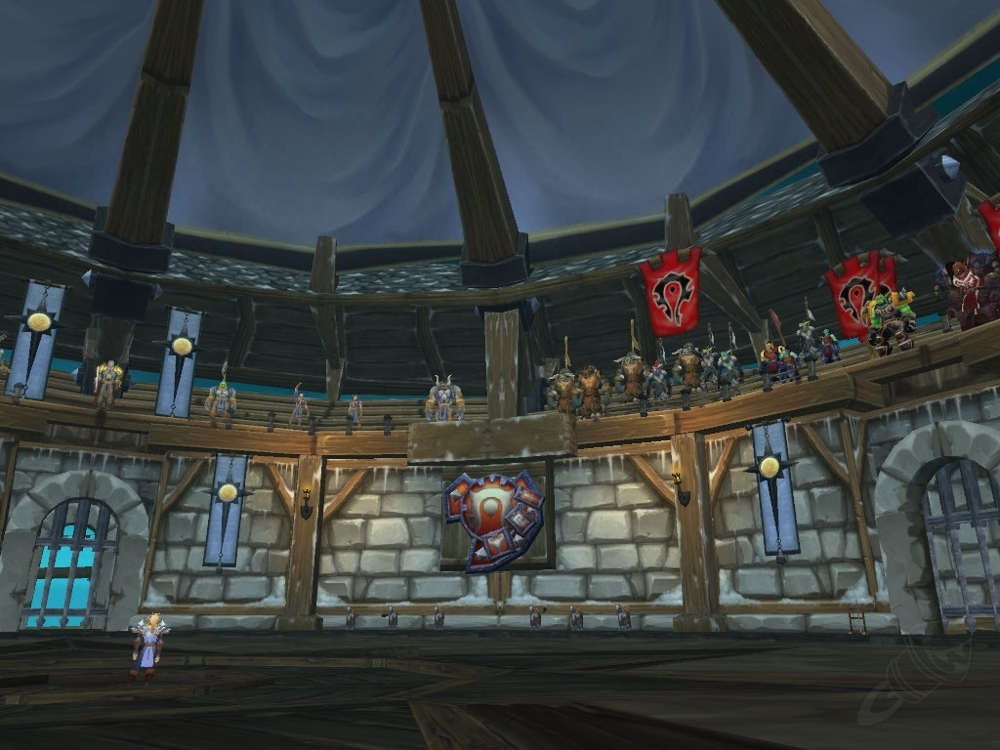

|| Reglas de Toc 25N ||
*Se medira tops en daño infligido.
CONSUELO DE LOS CAIDOS:
Top3 Heler "Anub´arak" (Pala, Chaman, Sagrado y Dici en skada)
VITALIDAD DEL GIGANTE:
Tankes Main que hayan tankeado
ELECCION DE MUERTE:
Top5 de Dps "Valkirs"
*(Caza, Gato, Picaros, Dks, Palas y Mejora)
*CAZADORES con Ballesta Y Escama 271
*DRUIDA Gato con Arma de Asta 271 Y Escama 271.
*PICARO COMBATE con 1 Hacha 271 Y escama 271
*DK ESCARCHA: dentro del top3
*Tankes q esten loteando DPS
REINO DE LOS MUERTOS:
3 primeros Caster Dentro del Top 10 "Lord Jaraxxus " (Y HELERS QUE ESTEN LOTEANDO DE CASTER SI ESTAN EN EL TOP 2 EN CURAS) (Y TOP 1 EN SKADA EN CASO DEL SACER DICI)
NOTA!!
ITEMS y ABALORIO se iran de acuerdo al Lot.
ABALORIOS y MARCAS no cuentan como Lot.
ARMAS por Transfiguracion con arma en mano 264minimo.
1 ARMA y ABALORIO. sea Main o Dual.
Cualquier Abalorio q se gane por Dual o Main Dual "personajes q topean realizando otra funcion" Se le Dara cn un Equipo minimo de 5.9k d Gs encantado y engemado con talentos activos.
|| Reglas de Toc 25H ||
- El Recount tanto de DPS como de Curación se va a medir en Anubarak; Se medirá con el
Dps del Daño infligido (El número que va asociado a los porcentajes en el Daño Infligidodel Recount).
CONSUELO DE LOS CAIDOS:
Top 3 de las curaciones en Anubarak /Clases: Druida, Chaman,Paladin Heal, Sacerdote Diciplina que lotee diciplina, que este top 1 en Skada en Valkirs y Jaraxxus, caso que un Sacerdote sombras quiera lotear Consuelo Necesita estar top 8 (Daño Inflingido) en Lord Jaraxxus
VITALIDAD DEL GIGANTE:
Lotean Prioridad Tanks Main que lotean tank main, Caso que los 2 tankes loteen Dps el abalorio se ira para un Dps que este loteando Tank Main, Ultima instancia que Nadie lotee tank main el abalorio se ira por dual a los que tankeen en Facciones
ELECCION DE MUERTE:
Solo Paladines, Picaros, DK Profanos y Dk Escarcha que este loteando profano (Top 6 en Anubarak), los Tankes Main/Off (2) Solo si son paladines (Y si estos lootean de DPS), Druida, Chaman o Pala Heal Que loteen Feral, Mejora o Dps Respectivamente pueden lotear Eleccion si es que estan top 2 en curas en Anubarak.( Warriors No lotean Eleccion), Druida Feral y Chaman Mejora Top 9 en Anub'Arak en Lord Jaraxxus
- Caso que un Cazador quiera lotear Eleccion Debe Estar Top 4 en Valkirs
REINO DE LOS MUERTOS:
Top 3 Casters dentro del Top 8 de Dps (Daño Inflinjido) En Lord Jaraxxus y Healers que lootean de
Casters dentro del Top 2 de Curas en Anubarak / Chamanes y Druidas/Chamenes Casters y Magos minimo 2 Disipadas por cada 10 cargas en Jaraxxus para lotear el abalorio, Caso que un Caster Nuevo entre desde un boss adelante de Lord Jaraxxus Caso que quiera topear para el Reino de los Muertos debe estar dentro del Top 10 Daño Inflingido en Anub'Arak
Loteo de Capas
-Astucia de Sylvanas (Capa de Agilidad) Lotea el primer cazador sin top en Anubarak (Cazador Sin Multidisparo, Caso que de uno solo no lotea y la capa pasa para el siguiente en el Recount, Caso que todos los cazadores usen Multidisparo ningun cazador lotea la capa), y Top 2 Warriors (Warrior con no menos de 50% de daño en Anub'arak, caso que tenga menos del 50% de daño en el Boss no lotea y se recorre el top al siguiente, Caso que todos los Warriors Tengan menos del 50% daño en el Boss ningun Warrior Lotea), Dk Escarcha que lotee escarcha (Caso que el Dk no tenga la capa 277), Picaro dentro del top 5 en Anubarak (todo recount medido en Daño Inflinjido en el Recount) y Druida Feral Top 6 En Lord Jaraxxus (Sin Flajelo), Caso que un Tank (War o Dudu Unicos casos) Loteen Astucia Tienen que tener la dual 6.4 Engemado y Encantado Pve
-Ira De Garrosh ( Capa De Fuerza) Main Warrior que lotee Dps, Lotean Dk que lotee Profano y Paladin Dps por main caso que no tengan Frazada Enrollada 277
-Robustez de Cairne: Lotean Prioridad los Tanks Main que loteen tank, caso contrario se va a los Dps que loteen tank main
-Conviccion de Lady Liadrin: Main Druidas y Sacer Dici Caso Que no tengan una capa mejor (Nivel de objeto 277), si ya la tienen se va por dual casters y chamanes
-Intensidad de Atheas: Lotean Main Casters, Chamanes y Pala Heal Caso que no tengan una capa mayor al nivel de objeto (272)
-Ropas de Toc no se lotean por main, todas las ropas se van por transfiguracion, las ropas se lotean por uso (Ropa de placas: Dk Pala y war), (Ropa de malla: Caza y chaman), (Ropa de cuero: Dudus y pica) (Ropa de Tela: Mago Brujo y Sacer)
-Armas se lotean por transfiguracion teniendo un arma equipada de un nivel de objeto Min 264 y linkeandola
NOTA!!!
- Se pueden lootear abalorios por Dual si cumple los requisitos y/o el Lider lo autoriza dual activa y Minima de 6.2K GS. Gemado y Encantado Superior PVE
-Caso que un Druida Lotee por Dual Eleccion debe estar en el top 2 de curas de Anubarak
-Caso Que un diciplina quiera lotear Reino: Debe Estar Top 1 en skada en Jaraxxus, Bestias de Rasganorte y Valkirs Mostrando la correspondiente Skada, y teniendo su equipo 6.2 de Caster encantado y engemado superior
- El looteo solo se Realizará por Teamspeak3.
- Al entrar al TS Usted Acepta las reglas aquí.
- En la banda se les indicará que lean las Reglas que estarán alojadas en el canal del TS.
- Druidas pueden lootear Astucia por Main (Feral), este debe hacer su Top en Curaciones y quedar por lo menos dentro del top 2 en Anubarak
- Los Atavios van con prioridad para quien tenga el Tier 245 Engemado Superior y Encantado Superior de la rama que lotean.
- Orbes de Cruzado y Recetas ahora NO SE LOOTEAN, Serán para el banco de la hermandad
-Si No anotas tu lot Seas Tank Dps o Heal (Ya seas picaro cazador mago o brujo) pierdes tu derecho a lot, todos deben anotarlo con el nombre de su PJ
-Caso Que algun Caster, Dps o Heal Muera en el boss que era su top tiene derecho a sacar screen en caso que este topeando, se le tomara en cuenta para lotear el abalorio si saliera
- Caso que ningun Dps, Caster o Heal Topee para su abalorio correspondiente se recorrera al mas proximo de la clase correspondiente que lotea el abalorio. Ejemplo Ningun Healer en el Top 3 de Anubarak esta loteando heal iria para el Top 4 si lotea heal
-Jaraxxus y Valkirs Warriors y Dudu Feral Prohibido dar Rajar y Flajelo
-Solo los Druidas y los Chamanes tendran 2 Formas de Hacer su top ya sea curando o pegando ya es decision suya, solo puede escoger una manera y caso que no la complete no podra realizar la otra forma

Staff
Borest
Dkrock
Sairon
Adilson
Chura
Ragdol
contactos
politica y privacidad
cokies
Copyright 2021- 2021 Angel Technology Inc. Todos los derechos reservados.